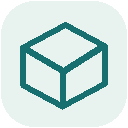
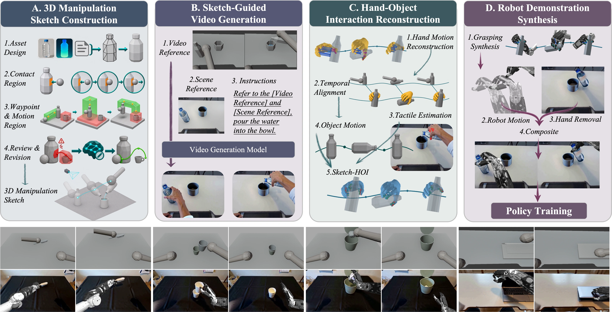
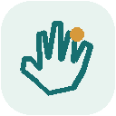
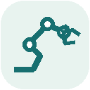

3D Manipulation Sketches Make Robot Data Generation Controllable
The same 3D sketch guides video generation and the recovery of robot actions.
Motivation
Why start with a sketch?
How far did the bottle travel?
Compare the original key clips

MethodFrom a 3D sketch to video and robot action

RGB and depth establish the tabletop scale. The agent places the objects, chooses a contact surface and hand approach, then sets waypoints for grasp, motion and release.
Examples of generated data
16 short interactions. Follow each motion from the sketch to the generated human video and robot action.
Pinch and pull a tissue
3D sketchGenerated human videoRobot demonstration
40.3% of Sketch trajectories succeeded on replay, compared with 18.1% for Do as I Do across the same 72 cases.
Long-horizon tasks · Drawer loading and burger assembly
Each pair shows the same five steps. The sketch is timed to the five stages of the generated video.
Load the drawer
3D sketchGenerated video
Assemble the burger
3D sketchGenerated video

ControllabilityWhat can a sketch control?
Four starting layouts for the same task: put the can in the bowl.
11.46%Text only
→73.18%With Sketch
Videos matching the requested initial position and orientation across 384 paired requests.
Average across all three dimensions: 32.29% with text, 74.65% with Sketch.
How a sketch guides finger contact
A hand can overlap the object on screen and still miss it in 3D. The sketch supplies a surface for fitting the hand. Replay shows what happens when the robot executes the recovered joint commands.
Fit contact on the bottle
Before fittingAfter fitting
Contact gap 55.05 → 16.74 mm
Penetration 4.75 → 3.41 mm
Replaying the recovered actions
First-personSide view
Simulation results
How well do policies trained on Sketch data generalize?
In simulation, policies trained on Sketch demonstrations have the highest overall success among the three methods evaluated. Held-out objects are harder than new layouts.
Overall closed-loop success
Sketch across test settings
- Seen objects, seen layouts
- 26.04%
- Seen objects, unseen layouts
- 23.96%
- Unseen objects, unseen layouts
- 16.96%
Closed-loop policy rollouts

EmbodimentsSketch across robot hands
A parallel gripper and two dexterous hands each solve for contact on their own geometry. Compare first-person and external views of their simulation replays.
First-personSide view
Real-robot experiments
Training real robots with Sketch data
Watch the trained Adam-U policy act from camera observations. The drawer and laptop closures are extensions trained and evaluated separately from the five core tasks.
Success on Adam-U
Each task has 20 trials. At 216 demonstrations, teleoperation leads. With 648 demonstrations and more layouts, Sketch succeeds in 41 of 100 trials.
With Sketch, we can design the experiences robots learn from.
BibTeX
Citation forthcoming.